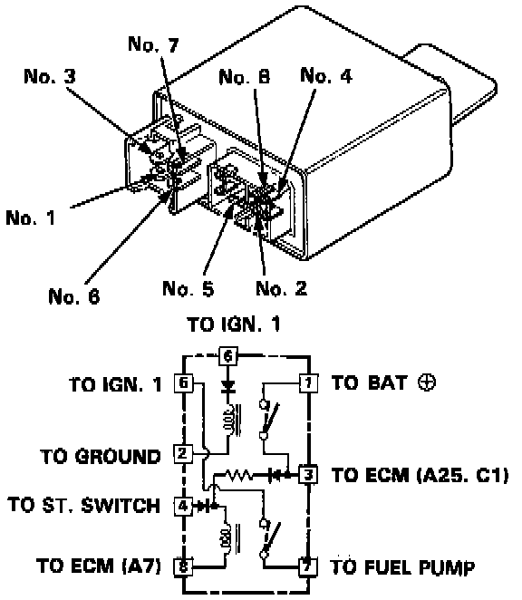
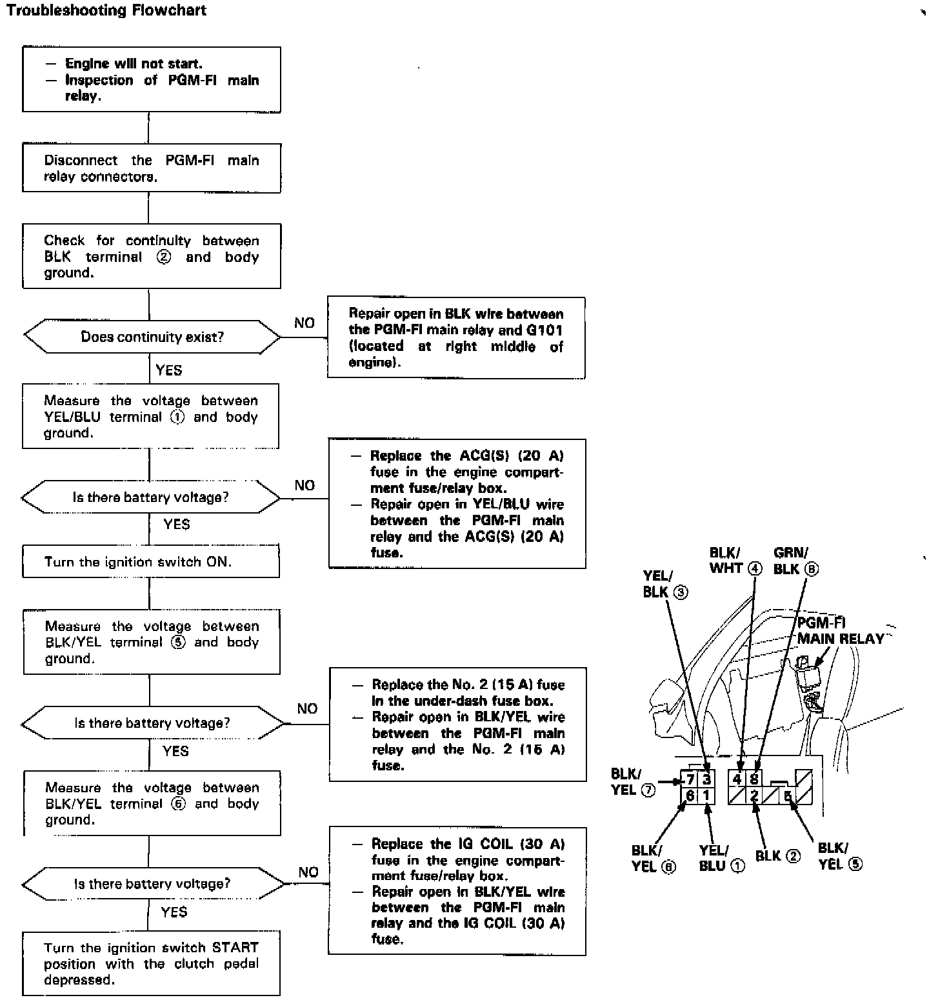
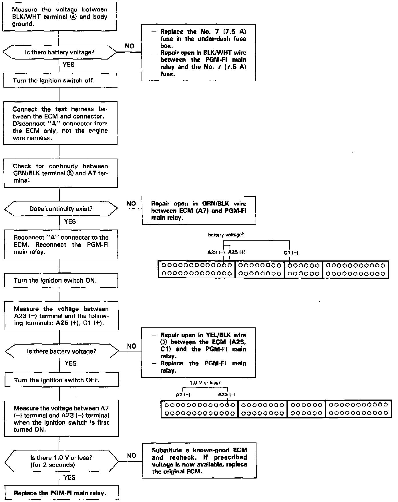

Main Relay (Computer/Fuel System): Testing and Inspection
INSPECTIONNOTE: If the car starts and continues to run, the PGM-FI main relay is OK.
Relay Inspection
1. Remove the PGM-FI main relay.

2. Attach the battery positive terminal to the No. 4 terminal and the battery negative terminal to the No. 8 terminal of the PGM-FI main relay. Then check for continuity between the No. 5 terminal and No. 7 terminal of the PGM-FI main relay.
- If there is continuity, go on to step 3.
- If there is no continuity, replace the relay and retest.
3. Attach the battery positive terminal to the No. 6 terminal and the battery negative terminal to the No. 2 terminal of the PGM-FI main relay. Then check that there is continuity between the No. 1 terminal and No. 3 terminal of the PGM-FI main relay.
- If there is continuity, go on to step 4.
- If there is no continuity, replace the relay and retest.
4. Attach the battery positive terminal to the No. 3 terminal and battery negative terminal to the No. 8 terminal of the PGM-FI main relay. Then check that there is continuity of the PGM-FI main relay. Then check that there is continuity between the No. 5 terminal and No. 7 terminal of the PGM-FI main relay.
- If there is continuity, the relay is OK; If the fuel pump still does not work, test the Harness.
- If there is no continuity, replace the relay and retest.
Circuit Inspection


Follow the steps as shown in the Troubleshooting Flowchart.